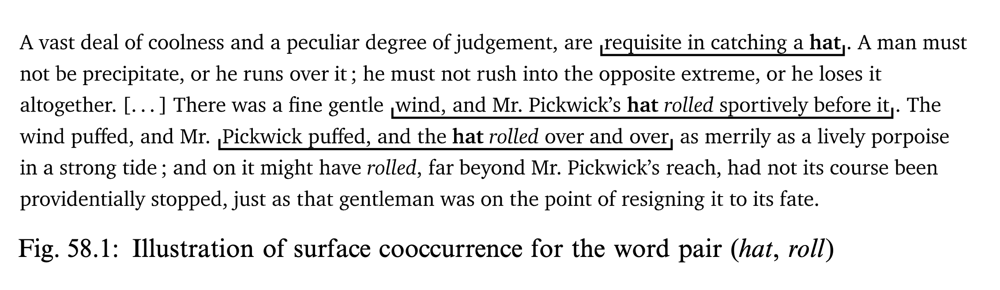
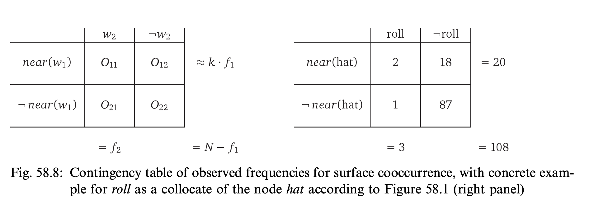
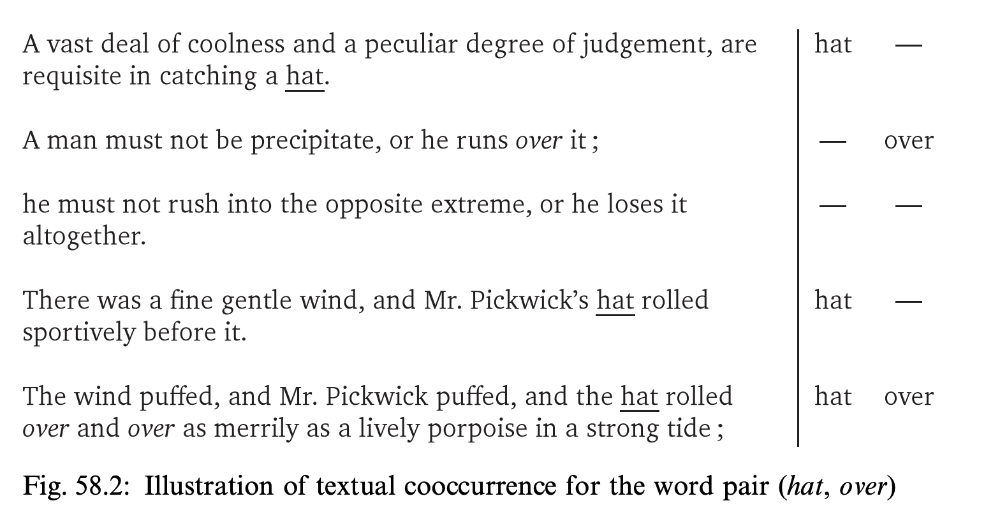
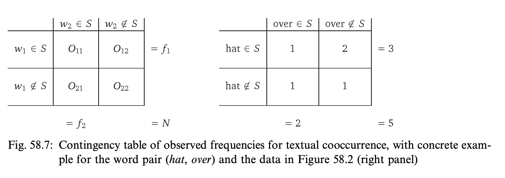
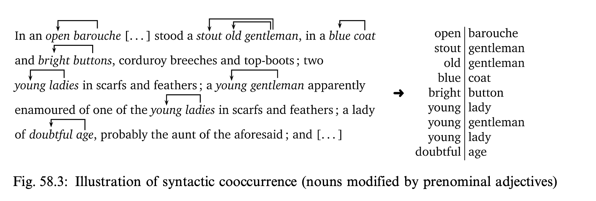

搭配詞
Collocations

1890–1960
「觀其伴，知其義。」— J. R. Firth (1957)
“You shall know a word by the company it keeps.”
CHI3242 文本挖掘 Text Mining for Chinese Humanities · ← → navigate · 1–9 sections · F fullscreen
什麼是搭配詞？What is a collocation?
兩個詞傾向於在自然語言中彼此靠近出現，稱為「共現」（cooccur）。
A combination of two words that tend to occur near each other in natural language, i.e. to cooccur.
Evert, “Corpora and collocations”, p. 1214
有些詞互相「吸引」Some words attract each other
cow – milkday – nightring – bell喝 – 茶天氣 – 好
有些則不然Others do not
know – glassdoor – year喝 – 桌子
問題：如何「測量」這種吸引力，並與偶然區分開？
How do we measure attraction, and tell it apart from chance?
隨機的詞 vs. 真實的語言Random words vs. real language
虛無假說：詞語是隨機分布的Null hypothesis: words are distributed randomly
自然語言：詞語的分布是有意義的Natural language: words are distributed meaningfully
搭配詞 ＝ 相鄰出現的頻率高於隨機打亂所預期的詞對
A collocation is a pair that sits together more often than random shuffling would predict.
觀察值 OObserved frequency: how often does Y appear near the target word X?
X 目標詞：王婆Target word
視窗 每個「王婆」的左右各 3 個詞（horizon = 3）Window: 3 words to the left and right of every 王婆. The numbers show the distance.
Y 搭配詞：痛苦，在視窗內出現 2 次Collocate: 痛苦 appears twice inside a window (in this excerpt)
\(O(\text{王婆}, \text{痛苦}) =\) 2
期望值 EExpected frequency: what would we see if it were all chance?
10 顆球，其中 5 顆紅球：\(P(\text{紅}) = 5/10 = 0.5\)10 balls, 5 of them red
抽出 4 顆，預期有幾顆紅球？（這一次：2）Draw 4 balls. How many should be red?
\(E(\text{紅} \mid 4) = P(\text{紅}) \times 4 = 0.5 \times 4 = \mathbf{2}\)
單次可能是 1 或 3 顆；期望值是「平均」：抽得越多，平均越接近 2。One draw may give 1 or 3. E is the average: the more we draw, the closer we get to 2.
隨機抽取：平均會靠近期望值Random draws: the running average approaches E
平均紅球數 vs. 抽取次數running average of red balls vs. number of draws
這一次：2 顆紅球this draw
已抽 0 次；平均 –draws so far · running average
R 抽一次
T 連抽 10 次
C 清除R: draw once · T: draw 10 times · C: clear
T 連抽 10 次
C 清除R: draw once · T: draw 10 times · C: clear
期望值：王婆 ／ 痛苦Expected frequency of the pair (王婆, 痛苦) by chance
語料總詞數 Ntotal tokens
50,000
count(王婆)times 王婆 occurs
200
count(痛苦)times 痛苦 occurs
50
視窗window
3 + 3
示意數字 illustrative numbers, not counted from the novel
① 隨機抽一個詞，剛好是「痛苦」的機率chance that a random word is 痛苦
\(P(\text{痛苦}) = \frac{50}{50{,}000} = 0.001\)
② 「王婆」周圍有多少個位置？how many slots around all 王婆?
\(200 \times 3 \times 2 = 1{,}200\)
③ 期望值 ＝ 機率 × 位置數expected = probability × slots
\(E = 0.001 \times 1{,}200 = \mathbf{1.2}\)
純屬偶然，只預期出現約 1.2 次by chance alone we expect only about 1.2 co-occurrences
觀察值 vs. 期望值Observed vs. expected for (王婆, 痛苦)
期望值 Eexpected by chance
1.2
觀察值 Oobserved in the corpus (illustrative)
8
\(\dfrac{O}{E} = \dfrac{8}{1.2} \approx \textcolor{#e0570f}{\mathbf{6.7}}\)
實際共現次數是偶然預期的 6.7 倍 → 王婆與痛苦互相「吸引」They co-occur 6.7 times more often than chance predicts: the two words attract each other.
接下來：先做一個練習，再用對數把 O/E 變成互信息 MI。Next: a practice example, then the logarithm of this ratio gives mutual information (MI).
練習：自己算 E 和 O/EPractice: compute E and O / E yourself
語料總詞數 Ntotal tokens
20,000
count(喝)times 喝 occurs
100
count(茶)times 茶 occurs
40
視窗window
4 + 4
觀察值 Oobserved (喝, 茶)
12
示意數字 illustrative numbers
① 隨機抽一個詞，剛好是「茶」的機率chance that a random word is 茶
\(P(\text{茶}) = \dfrac{40}{20{,}000} = \mathbf{0.002}\)
② 「喝」周圍有多少個位置？how many slots around all 喝?
\(100 \times 4 \times 2 = \mathbf{800}\)
③ 期望值 ＝ 機率 × 位置數expected = probability × slots
\(E = 0.002 \times 800 = \mathbf{1.6}\)
④ 觀察值 ÷ 期望值observed / expected
\(\dfrac{O}{E} = \dfrac{12}{1.6} = \textcolor{#e0570f}{\mathbf{7.5}}\)
O 遠高於偶然預期 → 喝與茶互相「吸引」O is far above chance: 喝 and 茶 attract each other.
預備知識：對數 log₂Background: the base-2 logarithm
log₂ x ＝ 2 的幾次方會等於 x？log₂ x is the power you raise 2 to in order to get x
\(2^{3} = 8 \;\Rightarrow\; \log_2 8 = \mathbf{3}\)
\(2^{0} = 1 \;\Rightarrow\; \log_2 1 = \mathbf{0}\)
\(2^{-1} = \tfrac{1}{2} \;\Rightarrow\; \log_2 \tfrac{1}{2} = \mathbf{-1}\)
比值 ×2 → 分數 ＋1
比值 ÷2 → 分數 −1
比值 ＝ 1（O ＝ E）→ 分數 0ratio doubles: +1 · ratio halves: −1 · ratio 1 (O = E): 0
比值 ÷2 → 分數 −1
比值 ＝ 1（O ＝ E）→ 分數 0ratio doubles: +1 · ratio halves: −1 · ratio 1 (O = E): 0
互信息 MIMutual information (pointwise): the log of O / E
對 O/E 取以 2 為底的對數Take the base-2 logarithm of O / E
\(\mathrm{MI} = \log_2 \dfrac{O}{E}\)
王婆 ／ 痛苦：for our example pair
\(\mathrm{MI} = \log_2 \dfrac{8}{1.2} = \log_2 6.7 \approx \textcolor{#e0570f}{\mathbf{2.74}}\ \text{bits}\)
MI 只看比值，不看證據多寡：罕見詞對容易得高分。MI only sees the ratio, not how much evidence there is: rare pairs can score very high (Evert, p. 1227).
為什麼取對數？每多一倍 ＝ ＋1Why the logarithm? Every doubling adds 1 bit
PPMI：正的點互信息PPMI: positive pointwise mutual information
MI 為負：兩詞「互相排斥」，比偶然更少共現Negative MI: the words repel each other, co-occurring less than chance
PPMI：把負值一律設為 0PPMI: replace every negative value with 0
\(\mathrm{PPMI} = \max\!\left(0,\ \log_2 \dfrac{O}{E}\right)\)
負值在語料不夠大時不可靠，所以直接忽略；PPMI 常用於詞向量。Negative values are unreliable unless the corpus is huge, so they are dropped. PPMI is common in word vectors.
簡單指標的問題（一）：兩個詞對A problem with simple measures, part 1: two word pairs
\(E(\text{coll.} \mid \text{target}) = P(\text{coll.}) \times \text{count}(\text{target})\)
\(N = 1{,}000{,}000\)。Evert 這裡數的是雙詞組（bigram）：搭配詞就是緊鄰在目標詞前面的那個詞。每個目標詞前面只有 1 個位置，所以「位置數」就是 count(target)，不必再乘視窗大小。Evert counts bigrams: the collocate is the word right before the target. Each target has exactly one such slot, so the number of slots is just count(target); no window size to multiply by.
the Iliad《伊利亞特》
count(the) = 100,000
count(Iliad) = 10
\(P(\text{the}) = \frac{100{,}000}{1{,}000{,}000} = 0.1\)
\(E = 0.1 \times 10 = \mathbf{1}\)
O = 10
count(Iliad) = 10
\(P(\text{the}) = \frac{100{,}000}{1{,}000{,}000} = 0.1\)
\(E = 0.1 \times 10 = \mathbf{1}\)
O = 10
must also「必須」「也」
count(must) = 1,000
count(also) = 1,000
\(P(\text{must}) = \frac{1{,}000}{1{,}000{,}000} = 0.001\)
\(E = 0.001 \times 1000 = \mathbf{1}\)
O = 10
count(also) = 1,000
\(P(\text{must}) = \frac{1{,}000}{1{,}000{,}000} = 0.001\)
\(E = 0.001 \times 1000 = \mathbf{1}\)
O = 10
兩個詞對的 O 和 E 完全一樣：O ＝ 10，E ＝ 1。Both pairs have exactly the same O and E.
簡單指標的問題（二）：分數相同A problem with simple measures, part 2: identical scores
| 詞對pair | O | E | O / E | MI |
|---|---|---|---|---|
| the Iliad | 10 | 1 | 10 | 3.32 |
| must also | 10 | 1 | 10 | 3.32 |
分數相同，但情況不同：Iliad 很罕見，而 must、also 都很常見。Same score, different situations: Iliad is rare, while must and also are both frequent.
O 與 E 忽略了語料中其他的一切——我們還要看兩詞「沒有」共現的情況。O vs. E ignores everything else in the corpus. We also need to look at when the words do not co-occur.
列聯表Contingency table: two events, X and Y
| Y 發生Y occurs | Y 不發生Y does not | |
|---|---|---|
| X 發生X occurs | a | b |
| X 不發生X does not | c | d |
每個個案恰好落入四格之一every case falls into exactly one cell
a ＝ X 和 Y 都發生的個案數cases where both X and Y occur
b ＝ 只有 X 發生（Y 沒有）X occurs, Y does not
c ＝ 只有 Y 發生（X 沒有）Y occurs, X does not
d ＝ 兩者都沒有發生neither X nor Y occurs
X、Y 可以是任何事件；表格也記錄了「都沒有」的情況。詞語只是其中一例（下一頁）。X and Y can be any events, and the table also records when neither happens. Words are just one example (next slide).
列聯表無處不在Contingency tables are everywhere
兩個「是／否」的性質，各自分成兩類，數一數各格有多少個案Two yes/no properties, cross-tabulated: how many cases fall in each cell?
吸煙 × 肺癌Smoking × lung cancer
吸煙者患肺癌的比例是否更高？Are smokers more likely to have cancer?
示意數字 illustrative
慣用手 × 性別Handedness × sex
左撇子的比例是否因性別而異？Does the share of left-handers differ by sex?
教科書例子 textbook example
好 × 天氣（句子）Two words × sentences
兩個詞是否傾向出現在同一個句子？Do the two words tend to share sentences?
本課的小語料 our toy corpus
結構完全相同：問題都是——兩個性質互相獨立嗎？搭配詞的判斷也是如此。Same structure every time: are the two properties independent? Collocations are no different.
n 選 k（一）：放回 vs. 不放回Background “n choose k”, part 1: with vs. without replacement
ABCD
從這 4 個字母中，依序選出 4 個。順序算不同。Pick 4 letters one after another from these 4. The order counts.
放回（同一字母可再選）：每次都有 4 種選擇With replacement (a letter may be chosen again): 4 choices every time
41st
×42nd
×43rd
×44th
＝256\(4^4\)
不放回（每個字母只能用一次）：每選一個，選擇就少一個Without replacement (each letter only once): one fewer choice after every pick
41st
×32nd
×23rd
×14th
＝24\(4!\)
階乘：\(4! = 4 \times 3 \times 2 \times 1 = 24\)，就是把 4 個字母全部排一遍的方法數。Factorial: \(4! = 4 \times 3 \times 2 \times 1 = 24\) is the number of ways to line up all 4 letters.
n 選 k（二）：只選 2 個（不放回）Background “n choose k”, part 2: only pick 2, without replacement
ABCD
現在只選 2 個，不放回；順序仍然算不同（AB ≠ BA）。Now pick only 2, without replacement; the order still counts (AB ≠ BA).
第 1 個有 4 種選擇，第 2 個剩 3 種：4 choices for the 1st pick, 3 left for the 2nd:
41st
×32nd
＝12AB, AC, AD, BA, …
用階乘寫：4! 除以 (4−2)!，去掉多餘的 ×2×1In factorial notation: divide 4! by (4−2)! to cut off the unneeded “×2×1”
\(\dfrac{4!}{(4-2)!}\)
＝\(4 \times 3 \times \cancel{2 \times 1}\)\(\cancel{2 \times 1}\)
＝ 12
一般式：從 n 個中選 k 個（有順序）＝ \(\dfrac{n!}{(n-k)!}\)General form: ordered picks of k out of n
但 AB 與 BA 被算成「不同」；我們只在乎選了哪兩個字母。→ 下一頁But AB and BA count as different; we only care which two letters were chosen. Next slide.
n 選 k（三）：不計順序，除以 k!Background “n choose k”, part 3: order should not matter
12 種有順序的選法中，每一組字母都出現了 2! ＝ 2×1 ＝ 2 次（AB 與 BA 是同一組）：In the 12 ordered picks, every set of letters appears 2! = 2 times (AB and BA are the same set):
ABBA
ACCA
ADDA
BCCB
BDDB
CDDC
所以再除以 2!：12 ÷ 2 ＝ 6 種選法So divide by 2! once more: 12 ÷ 2 = 6 different choices
\(4!\)\((4-2)!\)\(\div\, 2!\)
＝\(4!\)\(2!\,(4-2)!\)
＝\(24\)\(2 \cdot 2\)＝ 6
\(\dbinom{\textcolor{#1f5fd6}{n}}{\textcolor{#e0570f}{k}} = \dfrac{n!}{k!\,(n-k)!}\)
\(= \dfrac{n!}{(n-k)!} \div k!\)
下一頁的奶茶實驗：\(\binom{8}{4} = \dfrac{8!}{4!\,4!} = 70\) 種選法，只有 1 種全對 → \(p = 1/70\)。Tea experiment (next slide): \(\binom{8}{4} = 70\) ways to pick the 4 milk-first cups; only 1 is fully correct, so \(p = 1/70\).
Fisher 與「奶茶實驗」Fisher and the lady tasting tea (1935)

1890–1962
Muriel Bristol 聲稱能分辨奶茶是「先倒牛奶」還是「先倒茶」。Ronald Fisher 設計了實驗來檢驗。A lady claims she can tell whether the milk or the tea was poured first. Fisher designs a test.
M
T
T
M
M
T
M
T
8 杯外觀相同：4 杯先牛奶 (M)、4 杯先茶 (T)，隨機排列；她要指出哪 4 杯是先牛奶。8 identical-looking cups, 4 milk-first and 4 tea-first, in random order. She must pick the 4 milk-first cups.
全部答對 all correct
\(p = \dfrac{1}{\binom{8}{4}} = \dfrac{1}{70} \approx \mathbf{0.014}\)
答對 3 杯 three correct
\(p = \dfrac{17}{70} \approx \mathbf{0.243}\)
全對時，靠猜的機率只有 1/70，這張表「太不可能」；答對 3 杯則可能只是運氣。這就是 Fisher 精確檢定。Guessing all 4 right has probability 1/70, so the table is very unlikely by chance. 3 of 4 could easily be luck. This is Fisher’s exact test.
一張表的機率怎麼算？How likely is one particular table? (hypergeometric distribution)
| 有 Yhas Y | 無 Yno Y | ||
|---|---|---|---|
| 有 Xhas X | a | b | a+b |
| 無 Xno X | c | d | c+d |
| a+c | b+d | N |
\(p =\)
\(\dbinom{\textcolor{#1f5fd6}{a+b}}{\textcolor{#e0570f}{a}}\)\(\dbinom{\textcolor{#1f5fd6}{c+d}}{\textcolor{#e0570f}{c}}\)
\(\dbinom{\textcolor{#7c3aed}{N}}{\textcolor{#e0570f}{a+c}}\)
\(\textcolor{#7c3aed}{N} = a + b + c + d\)：表中所有個案（項目）的總數。\(\textcolor{#7c3aed}{N}\) is the total number of items in the table.
分子 ①：「有 X」這一列有 \(\textcolor{#1f5fd6}{a+b}\) 個項目，其中 \(\textcolor{#e0570f}{a}\) 個有 Y —— 從 \(a+b\) 個中選出 \(a\) 個。Numerator ①: the “has X” row holds \(\textcolor{#1f5fd6}{a+b}\) items; choose the \(\textcolor{#e0570f}{a}\) of them that have Y.
分子 ②：「無 X」那一列有 \(\textcolor{#1f5fd6}{c+d}\) 個項目，其中 \(\textcolor{#e0570f}{c}\) 個有 Y。兩列的選法相乘。Numerator ②: the other row holds \(\textcolor{#1f5fd6}{c+d}\) items, \(\textcolor{#e0570f}{c}\) of which have Y. The two choices are independent, so we multiply.
分母：全部 \(\textcolor{#7c3aed}{N}\) 個項目中，任意挑 \(\textcolor{#e0570f}{a+c}\) 個當作「有 Y」的所有可能。Denominator: all ways to choose which \(\textcolor{#e0570f}{a+c}\) of the \(\textcolor{#7c3aed}{N}\) items have Y, ignoring the rows.
代入 \(a=8,\ b=2,\ c=2,\ d=8\)（\(N=20\)）：Plug in the numbers:
這張表有多「不可能」？How unlikely is this table?
20 位學生：10 位女生、10 位男生；其中 10 位有在讀書，而讀書的人裡有 8 位是女生。性別與讀書有關嗎？20 students: 10 women, 10 men; 10 are studying, and 8 of those are women. Is studying related to sex? (illustrative numbers)
若兩者無關，純屬偶然，預期讀書的女生只有 5 位。If they were unrelated, we would expect only 5 studying women.
觀察到的表 observed table
更極端 more extreme
最極端 most extreme
Fisher 精確檢定：把觀察到的表與所有更極端的表的機率相加Fisher’s exact test sums the observed table and all more extreme ones
→ 顯著 significant
回到 the Iliad ／ must alsoBack to Evert’s example: what does Fisher’s test say?
兩者：O ＝ 10，E ＝ 1，O/E ＝ 10，MI ＝ 3.32 —— 簡單指標分不出來。現在看完整的列聯表：Both have O = 10, E = 1, O/E = 10, MI = 3.32, so the simple measures cannot separate them. Now the full contingency tables (N = 1,000,000 bigrams):
the Iliad (count(the) = 100,000 · count(Iliad) = 10)
must also (count(must) = count(also) = 1,000)
the Iliad 的 c ＝ 0：每個 Iliad 前面都是 the，O ＝ 10 已是最大可能值；must also 的 c ＝ 990：also 大多沒有 must 在前。For the Iliad c = 0: every Iliad is preceded by the, so 10 is the maximum possible O. For must also, c = 990: most alsos have no must before them.
兩者都「顯著」，但 the Iliad 的 p 小 1000 倍 → 用 p 值排序，the Iliad 排在前面。Both are significant, but the Iliad’s p is 1000 times smaller. Ranking by p-value puts the Iliad first, which O/E and MI cannot do.
三種定義「相鄰」的方法Three ways to define “near”
Evert：先決定什麼是一個共現項目 (item)，再問每個項目是否含 w₁、是否含 w₂Evert: first define what an item is, then ask whether each item contains w₁ and whether it contains w₂
記號（Evert）：w₁ ＝ 目標詞 X，w₂ ＝ 搭配詞 Y；f₁ ＝ count(w₁)，f₂ ＝ count(w₂)，N ＝ 項目總數。O、E 的定義不變。Notation from here on (Evert): w₁ = target X, w₂ = collocate Y; f₁ = count(w₁), f₂ = count(w₂), N = total number of items.
視窗法Window (surface)
Y 在 X 左右 k 個詞之內Y is within k words of X
天氣那麼好我們
計數單位：詞unit: tokens
句子法Sentence (textual)
X 與 Y 在同一個句子裡X and Y are in the same sentence
好天氣…散步
計數單位：句子unit: sentences
語法關係法Grammatical (syntactic)
X 與 Y 有語法關係（如：形容詞→名詞）X and Y stand in a syntactic relation
好→天氣
計數單位：語法搭配對unit: grammatical pairs
視窗法Window approach: Y within k words of X
視窗horizon = 2 ↑ ↓
X = 好Y = 天氣橙色 O₁₁ ＝ O視窗 window（不跨句 stays within a sentence）
項目：語料中每個詞（不含 w₁ 本身）item: every word token except w₁ itself
第 1 列：落在 w₁ 的視窗內row 1: falls inside a span around w₁
第 1 欄：就是搭配詞 w₂column 1: is the collocate w₂
Evert 的原例：視窗法 (hat, roll)Evert’s own example: surface cooccurrence, Fig. 58.1 and 58.8


視窗 (L4, R4)：node 詞 hat 左右各 4 個詞，不跨句。Span (L4, R4) around the node word hat, limited by sentence boundaries.
第 2、3 個視窗各含一個 rolled → O ＝ 2The 2nd and 3rd span each contain roll → O = 2
f₁ ＝ 3（hat）、f₂ ＝ 3（roll）、N ＝ 111 個詞f₁ = 3 (hat), f₂ = 3 (roll), N = 111 tokens
項目＝除 hat 以外的每個詞；第 1 列＝落在 hat 視窗內的詞（20 個）Items: every token except hat. Row 1: tokens inside a span around hat (20).
O₁₁ ＝ 2 就是 O；第 1 欄和 ＝ f₂ ＝ 3；第 2 列和 ＝ N − f₁ ＝ 108O₁₁ = 2 is our O; column 1 sums to f₂ = 3; row 2 sums to N − f₁ = 108
與我們的小語料完全同一套定義Same definitions as our toy corpus
句子法Sentence approach: X and Y in the same sentence
X = 好Y = 天氣
項目：每一個句子item: every sentence
第 1 列：句子含 w₁row 1: the sentence contains w₁
第 1 欄：句子含 w₂column 1: the sentence contains w₂
橙色格 O₁₁ ＝ O（共現次數）highlighted cell O₁₁ = O, the cooccurrence count
Evert 的原例：句子法 (hat, over)Evert’s own example: textual cooccurrence, Fig. 58.2 and 58.7


項目＝句子（共 5 句，N ＝ 5）Items are sentences; N = 5
hat 在 3 句（f₁ ＝ 3），over 在 2 句（f₂ ＝ 2），同句出現 1 次（O ＝ 1）hat is in 3 sentences, over in 2, both in 1 sentence
最後一句雖有兩個 over，仍只算 1 次The last sentence has two overs but counts once
O₁₁ ＝ 1，O₁₂ ＝ 2，O₂₁ ＝ 1，O₂₂ ＝ 1one sentence has both, two only hat, one only over, one neither
列和 ＝ f₁ ＝ 3，欄和 ＝ f₂ ＝ 2，總和 ＝ N ＝ 5row sum = f₁ = 3, column sum = f₂ = 2, total = N = 5
語法關係法Grammatical approach: X and Y in a syntactic relation
只計「形容詞 → 名詞」的修飾關係；謂語用法（心情不好）不算。Only adjective → noun modifiers count; predicative uses are ignored.
找到的搭配對 pairs found
項目：每一個「形容詞→名詞」搭配對item: every adjective → noun pair token
第 1 列：第一個詞是 w₁row 1: the first word is w₁
第 1 欄：第二個詞是 w₂column 1: the second word is w₂
橙色格 O₁₁ ＝ Ohighlighted cell = cooccurrence count
Evert 的原例：語法關係法 (young, gentleman)Evert’s own example: syntactic cooccurrence, Fig. 58.3 and 58.6

(O, f₁, f₂, N)
＝ (1, 3, 3, 9)
＝ (1, 3, 3, 9)
項目＝每一個「形容詞→名詞」搭配對（pair token），共 9 個（N ＝ 9）Items: the 9 adjective → noun pair tokens listed on the right
其他所有詞（in, stood, corduroy …）都不算All other words are disregarded
young 修飾 3 個名詞（f₁ ＝ 3），其中 1 個是 gentleman（O ＝ 1）young modifies 3 nouns; one of them is gentleman
gentleman 被 3 個形容詞修飾（f₂ ＝ 3）：stout, old, younggentleman is modified by 3 adjectives: stout, old, young
O₂₂ ＝ 4：與 young、gentleman 都無關的 4 對4 pairs contain neither word
同一個問題，三種數法Same question, three ways of counting
| 視窗法Window | 句子法Sentence | 語法關係法Grammatical | |
|---|---|---|---|
| 「相鄰」是指“near” means | k 個詞之內within k words | 同一個句子same sentence | 有語法關係syntactic relation |
| 計數單位unit counted | 詞tokens | 句子sentences | 搭配對pairs |
| 需要needs | 選定 ka choice of k | 分句sentence splitting | 句法分析器a parser |
| (好, 天氣) 的表table for (好, 天氣); orange = O₁₁ = O |
回顧Recap
1
搭配詞：兩個詞比偶然更常在附近一起出現A collocation: two words that occur near each other more often than chance
2
觀察值 O 對 期望值 E；取對數得 MI，去掉負值得 PPMIObserved O vs. expected E; the log gives MI, dropping negatives gives PPMI
3
列聯表：也記錄「沒有」共現的情況（a, b, c, d）Contingency table: also records the cases where the words do not co-occur
4
Fisher 精確檢定：這張表在「純屬偶然」下有多不可能？Fisher’s exact test: how unlikely is this table if it were all chance?
5
三種「相鄰」：視窗、句子、語法關係 —— 同一張表，不同的「項目」Three kinds of “near”: window, sentence, grammatical: same table, different items
6
下一步：在真實語料上計算，比較不同的指標Next: compute these on a real corpus and compare the measures